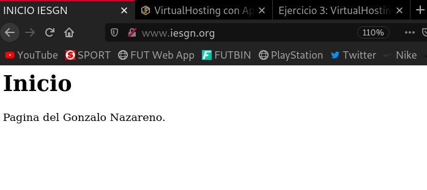
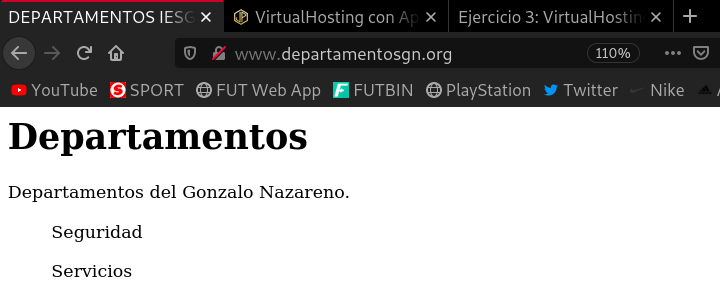

Configuración de VirtualHosting
Antes de nada voy a decir que en mi caso voy a utilizar Vagrant y como software de virtualización VirtualBox.
El objetivo de esta práctica es la puesta en marcha de dos sitios web utilizando el mismo servidor web apache. Hay que tener en cuenta lo siguiente:
- Cada sitio web tendrá nombres distintos.
- Cada sitio web compartirán la misma dirección IP y el mismo puerto (80).
Queremos construir en nuestro servidor web apache dos sitios web con las siguientes características:
- El nombre de dominio del primero será
www.iesgn.org, su directorio base será/var/www/iesgny contendrá una página llamadaindex.html, donde sólo se verá una bienvenida a la página del Instituto Gonzalo Nazareno. - En el segundo sitio vamos a crear una página donde se pondrán noticias por parte de los departamento, el nombre de este sitio será
www.departamentosgn.org, y su directorio base será/var/www/departamentos. En este sitio sólo tendremos una página inicialindex.html, dando la bienvenida a la página de los departamentos del instituto.
Para conseguir estos dos sitios virtuales debes seguir los siguientes pasos:
1. Los ficheros de configuración de los sitios webs se encuentran en el directorio /etc/apache2/sites-available, por defecto hay dos ficheros, uno se llama 000-default.conf que es la configuración del sitio web por defecto. Necesitamos tener dos ficheros para realizar la configuración de los dos sitios virtuales, para ello vamos a copiar el fichero 000-default.conf:
cd /etc/apache2/sites-available cp 000-default.conf iesgn.conf cp 000-default.conf departamentos.conf
De esta manera tendremos un fichero llamado iesgn.conf para realizar la configuración del sitio web www.iesgn.org, y otro llamado departamentos.conf para el sitio web www.departamentosgn.org.
2. Modificamos los ficheros iesgn.conf y departamentos.conf, para indicar el nombre que vamos a usar para acceder al host virtual (ServerName) y el directorio de trabajo (DocumentRoot).
Cambiamos las líneas de ServerName y DocumentRoot de forma que queden así:
Para la página www.iesgn.org:
ServerName www.iesgn.org DocumentRoot /var/www/iesgn
Para www.departamentosgn.org:
ServerName www.departamentosgn.org DocumentRoot /var/www/departamentos
3. No es suficiente crear los ficheros de configuración de cada sitio web, es necesario crear un enlace simbólico a estos ficheros dentro del directorio /etc/apache2/sites-enabled, para ello:
a2ensite iesgn a2ensite departamentos
La creación de los enlaces simbólicos se puede hacer con la instrucción a2ensite nombre_fichero_configuracion, para deshabilitar el sitio tenemos que borrar el enlace simbólico o usar la instrucción a2dissite nombre_fichero_configuracion.
a2ensite iesgn.conf a2ensite departamentos.conf
4. Crea los directorios y los ficheros 'index.html' necesarios en /var/www y reiniciamos el servicio.
root@buster:/var/www# cat iesgn/index.html
<\html>
<\head>
<\title>INICIO IESGN<\/title>
<\/head>
<\body>
<\h1>Inicio<\/h1>
<\p>Pagina del Gonzalo Nazareno.<\/p>
<\/body>
<\/html>
root@buster:/var/www# cat departamentos/index.html
<\html>
<\head>
<\title>DEPARTAMENTOS IESGN<\/title>
<\/head>
<\body>
<\h1>Departamentos<\/h1>
<\p>Departamentos del Gonzalo Nazareno.<\/p>
<\ul>Seguridad<\/ul>
<\ul>Servicios<\/ul>
<\/body>
<\/html>
Para reiniciar el servicio:
systemctl restart apache2.service
5. Para terminar lo único que tendremos que hacer es cambiar el fichero hosts en los clientes y poner dos nuevas líneas donde se haga la conversión entre los dos nombre de dominio y la dirección IP del servidor.
Hay que decir que si queremos visualizar las dos páginas webs en nuestro cliente, debemos configurar una red privada.
Para crear una red hostonly, podemos simplemente descomentar la siguiente línea que viene comentada por defecto en el fichero 'Vagrantfile'. Esto asignará un IP privada fija a nuestra mv.
config.vm.network "private_network", ip: "192.168.33.10"
Luego en el fichero /etc/hosts del cliente, añadir estas dos líneas:
192.168.33.10 www.iesgn.org 192.168.33.10 www.departamentosgn.org
La IP obviamente depende de la cual tengamos asignada a la mv.
Voy a abrir las páginas desde el cliente.


Repite el ejercicio cambiando los directorios de trabajo a /srv/www. ¿Qué modificación debes hacer en el fichero /etc/apache2/apache2.conf?
Lo primero que debemos hacer es modificar el fichero apache2.conf, que actualmente posee esta configuración:
<\Directory /var/www/>
Options Indexes FollowSymLinks
AllowOverride None
Require all granted
<\/Directory>
#<\Directory /srv/>
# Options Indexes FollowSymLinks
# AllowOverride None
# Require all granted
#<\/Directory>
Esto indica que mostrará todos los ficheros de las páginas alojadas en la ruta /var/www/. Lo que debemos hacer es comentar estas líneas y descomentar las de abajo que hacen referencia a la ruta /srv/ y todos sus hijos:
#<\Directory /var/www/>
# Options Indexes FollowSymLinks
# AllowOverride None
# Require all granted
#<\/Directory>
<\Directory /srv/>
Options Indexes FollowSymLinks
AllowOverride None
Require all granted
<\/Directory>
Ahora creamos la estructura de directorios que queremos y copiamos los mismos 'index.html' que hemos utilizado antes:
cd /var/www/iesgn cp index.html /srv/www/iesgn/ cd ../departamentos/ cp index.html /srv/www/departamentos/
Ahora ya solo nos quedaría modificar los archivos iesgn.conf y departamentos.conf que se encuentran en el directorio /etc/apache2/sites-available. En mi caso he utilizado los mismos ficheros de configuración que había generado antes, por tanto solo tendría que cambiar la ruta del 'DocumentRoot', pero también se podrían generar otros archivos de configuración, si deseamos conservar estos:
La línea del fichero iesgn.conf quedaría:
DocumentRoot /srv/www/iesgn
Y la del departamentos.conf:
DocumentRoot /srv/www/departamentos
Ahora reiniciamos el servicio:
systemctl restart apache2.service
Y ya podríamos ver las páginas alojadas en nuestro directorio /srv/.